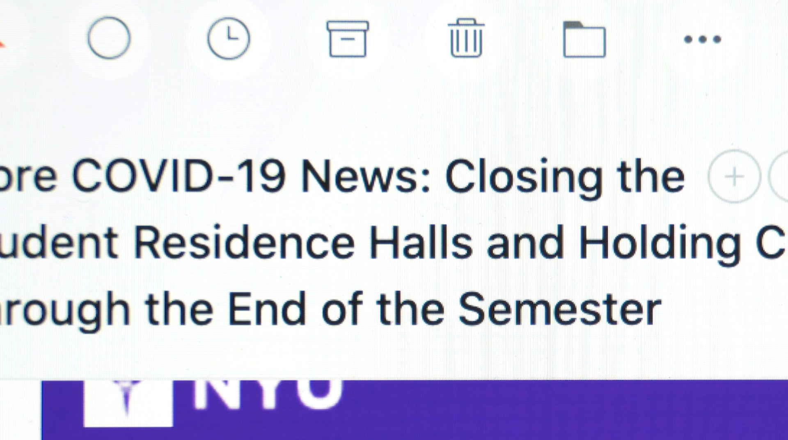

This video presents the following observations of my quarantine experience.
See vs. hearIn my video project proposal, I imagine that my own visual and audio experience of the isolation becomes the subject of the video, and the camera will now have to recreate what I have seen and heard during my time in isolation as accurately as possible. As I recall how a day in my quarantine had been like, and as I go through the materials I’ve gathered, what I noticed starkly, are 1) there are two focal points of my visual attention: the peephole (the world outside), and news reports on my devices (the world further outside), and 2) in comparison to the deluge of visual stimuli especially from the screen, there are significantly less audio experience: most of my quarantine is quiet except for my own noises.
Information overload This video places a very heavy focus on presenting headlines. In my experiences, a considerable amount of time is effectively spent hopping from one breaking news to another. And so I wish to present this with montage consists solely of analog (as in physical) recordings of text on the screen.
Documenting frustration Additionally, in this video, I document one very specific event during my quarantine, which is my repeated inquiry to receive a test and my ultimate failure to receive one. Again, because the primary for of communication is through digital tools, the visual presentation of this is through screen recording.
Design
Progression through diegetic elements In this project, instead of using narrations or captions to progress the video, I instead present diegetic elements that would hint at such progression. For example, the fact that I am departing from the dorm and the city is suggested through the email from NYU, and that I am in quarantine is hinted through the IM messaging history between me and the quarantine facility personnels.

Split screen In some sections of the video, I present two videos at a time, side by side. This is a direct visualization of the parallel between the analog and the digital. I got the inspiration from Professor Bianco’s videos.